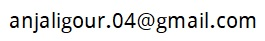

English department at Ananda Mohan College, University of Calcutta, Kolkata
List of teachers
- Shri Debashish Raychaudhuri
- Shri Sandipan Sen, Email address:

- Shri Rajiv Kumar Nasker, Email address:

- (Head of the Department from 1.1.2024 to 31.12.2025) Shri Dibyajyoti Ghosh, Email address:

- Smt. Anjali Gour, Email address: 
The information on this page was last updated on 16 February 2024.
Official website of Ananda Mohan College is http://anandamohancollege.ac.in